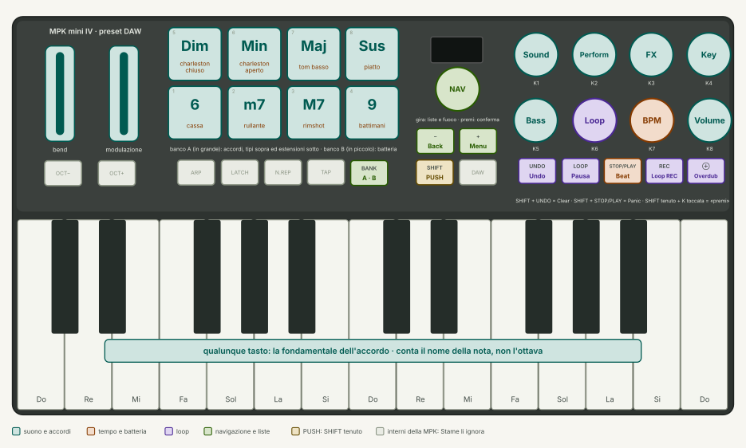
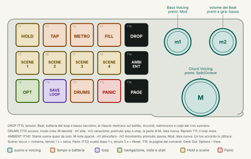
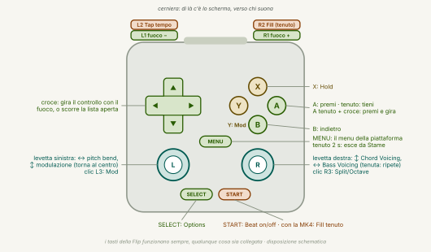

Un foglio da stampare, fronte e retro. Vetrina 0.1, mappa del 17/10/2026. «prev.» = previsto dalla specifica, non ancora nella vetrina.
Gesti (sulla MPK)
| Gesto | Come | Esempi |
|---|---|---|
| premi | SHIFT tenuto + K toccata e lasciata (vale al rilascio di SHIFT) | Key mode on/off, Beat on/off, basso on/off, liste |
| tieni | SHIFT + K toccata, SHIFT tenuto 1 s | Lock del Perform, Lock dell'FX, lista dei Beat |
| premi e gira | SHIFT + K girata, o manopola del pad premuta e girata | Transpose (Key), Bass Volume (Volume), Beat Volume (BPM) |
| gira | la manopola K | Sound, Perform, FX, Key / Bass, Loop, BPM, Volume |
| Mod + … | m1 premuta (Y senza pad) | + REC uscita forzata dal loop (Clear) · + Bass basso on/off · + BPM batteria a tastiera |
Con MPK e pad ogni comando ha una casa: girare e premere sulla MPK, liste sulla manopola nav, le aggiunte sul pad. I tasti della Flip funzionano sempre. Se manca un apparecchio, gli altri fanno lo stesso mestiere.
MPK mini IV (preset DAW)

| Comando | Funzione |
|---|---|
| tasti | fondamentale (solo il nome della nota) |
| pad A, sopra | Dim · Min · Maj · Sus |
| pad A, sotto | 6 · m7 · M7 · 9 |
| pad B | batteria: cassa · rullante · rimshot · battimani / charleston ch. · charleston ap. · tom · piatto |
| K1 K2 K3 K4 | Sound · Perform · FX · Key |
| K5 K6 K7 K8 | Bass · Loop · BPM · Volume |
| SHIFT | PUSH: tenuto + K toccata = premuta |
| nav | gira = liste e fuoco · premi = conferma · premi e gira = premi-e-gira del fuoco |
| − / + | Back / Menu |
| UNDO | Undo · SHIFT + UNDO = Clear |
| LOOP | pausa / ripresa |
| STOP/PLAY | Beat on/off · SHIFT + STOP/PLAY = Panic |
| REC | Loop: registra (riprende un loop messo da parte) |
| ⊕ | overdub on/off |
| ruote, pedale | bend, modulazione, sustain |
Macro pad

| 1 | 2 | 3 | 4 | 5 | |
|---|---|---|---|---|---|
| alto | T1 HOLD | T2 TAP | T3 METRO | T4 FILL (tenuto) | T13 DROP (tenuto) |
| mezzo | T5 Scene 1 | T6 Scene 2 | T7 Scene 3 | T8 Scene 4 | T14 VIEW |
| basso | T9 Options | T10 Save Loop | T11 DRUMS | T12 Panic 1 s · Reset 3 s | T15 PAGE |
Scene: tocco = richiama (suono, basso, Perform, FX, tonalità, basso on/off), tenuto 1 s = salva. Hold: l'accordo resta fino al tasto dopo. Save Loop: ferma e tiene da parte, REC riprende.
| Manopola | Gira | Premi | Sotto DRUMS |
|---|---|---|---|
| M | Chord Voicing | Split/Octave | densità · premi play/stop |
| m1 | Bass Voicing | Mod | stile · premi la parte |
| m2 | Beat Volume (premi e gira: Bass Volume) | — | variazione · premi idea nuova |
T13 DROP: tenuto, Beat, batteria del loop e basso tacciono; lasciato, rientrano sul battito dopo (subito se lo lasci entro un sedicesimo dal battito). Accordi, metronomo e colpi dal vivo suonano sempre.
T14: Geek Out e ritorno. T15: pagina dei comandi aperta finché non lo ripremi (o −).
Flip (sempre viva)

| Tasto | Funzione |
|---|---|
| L1 / R1 | fuoco −/+ (apre la pagina dei comandi) |
| croce | gira il fuoco · scorre la lista |
| A | premi · tieni · A + croce = premi e gira |
| B | indietro |
| X | Hold (con la Plus: PUSH) |
| Y | Mod |
| SELECT | Options |
| START | BPM: Beat on/off · con la MK4: Fill tenuto |
| MENU | menu · tenuto 2 s esce |
| levetta sinistra | pitch bend · modulazione (a molla) |
| levetta destra | su/giù Chord Voicing · destra/sinistra Bass Voicing |
| L3 · R3 | Mod · Split/Octave |
| L2 · R2 | Tap tempo · Fill tenuto |
I controlli
| Gira | Premi | Tieni | Premi e gira | |
|---|---|---|---|---|
| Sound | 200 suoni (149 di sintesi, 51 campionati) | lista | prev. Save | — |
| Perform | quantità (0 = off) | lista dei modi | Lock | — |
| FX | 0…10 | mostra | Lock | — |
| Key | tonalità | Key mode | prev. scelta rapida | Transpose ±12 |
| Bass | 24 bassi | basso on/off | prev. modi | — |
| Loop | voce del menu | REC / voce | prev. 2 s Save | — |
| BPM | 60…200 (o T2 Tap) | Beat on/off | lista metriche e Beat | Beat Volume |
| Volume | 0…99 | batteria | — | Bass Volume |
| Options | vista | lista | — | — |
| Ch. Voicing | ±1 semitono | Split/Octave | — | — |
| Bs. Voicing | ottava del basso | Mod | — | — |
Options: Exit · View (React, Chord, Keyboard, Chord+Kb, Notes, Geek Out) · Play Style (Simple, Advanced, Free) · Single Notes (Split, Octave) · Secret Chords (On, Off).
Lista di BPM: 2/4 · 3/4 · 4/4 · 6/8 · Funk · Bossa · Motorik · Lounge · Shuffle · Halftime · Boom Bap · Disco · Samba · Ballad · Train · Chip · Techno · Dub · Acid · Industrial · Minimal · Electro · Trap. Batteria a tastiera (T11): tasti C…B = cassa, rimshot, rullante, battimani, charleston chiuso, tom basso, charleston aperto, tom alto, maracas, conga, campanaccio, piatto; i colpi entrano nel loop al sedicesimo.
Menu: Exit · Panic · Theme (Giorno di default) · Linnaeus Tag · Legend · Meters · Demo · Play Demo Song (la lista dei sei brani: uno a scelta, subito) · Quit Stame.
Drum machine (DRUMS acceso)
K1 Kit (Beat, Studio, Jazz, 808, Techno, Chip) · K2 Roll (tieni il tasto: Off, 1/4, 1/8, 1/8T, 1/16, 1/16T, 1/32) · K3 Drive 0…10, SHIFT + K3 girata filtro (LP 10…1 · Off · HP 1…10) · K4 Swing (Off, 52 %…75 %: Beat, loop e Roll) · K5 Accent 0…10 · i pad del banco B suonano sempre. Swing e FX restano fuori da DRUMS: in testata SWING e DRUM FX.
Crea (le manopole del pad, finché DRUMS è acceso): M densità 0…10 · premuta play/stop · m1 stile (Techno, Rock, Funk, Break, Halftime, Dub, Bossa, Electro, Acid, Industrial) · premuta la parte di M (tutto, cassa, rullante, charleston, aperto, perc.) · m2 variazione 0…99 · premuta idea nuova · premuta e girata volume del Beat. Ripremi T11: l'editing si chiude, il loop resta.
Looper
REC → count-in di 1 battuta → 4 battute registrate → PLAY. Poi: ⊕ overdub on/off · LOOP pausa/ripresa · UNDO ultimo strato · SHIFT + UNDO (o CLEAR) via tutto · T10 mette da parte, REC riprende. Con Loop girato si sceglie la voce in Z3 e con Loop premuto (SHIFT + K6) si esegue.
Testata
batteria sempre · NO MPK (lampeggia) · MPK FACTORY (solo Plus) · PAD rosso = pad non aperto o senza mappa · POCKET (prev.) · DRUMS · HOLD · METRO · FILL · DROP · SWING · DRUM FX · CLIP 1,5 s · XRUN 2 s. In Geek Out: MPK, IN/OUT, VOX, CPU (misurato), livelli, PAD.